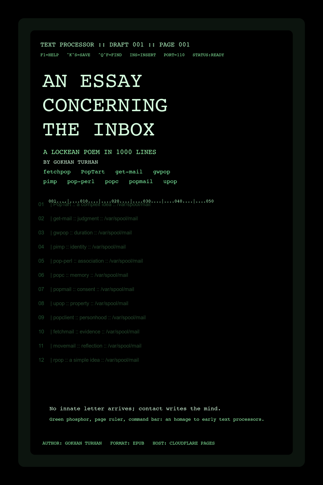

A Lockean poem in twenty cantos and one thousand lines
By Gökhan Turhan
An Essay Concerning the Inbox
A Lockean poem in twenty cantos and one thousand lines
By Gökhan Turhan
First digital edition for Cloudflare Pages.
0001Blank was the screen before the hand found Enter.
0002Blanker the inward slate, if Locke still has a claim upon us.
0003Then fetchpop knocked across the wire like weather at a chapel door.
0004Somewhere in Bell Labs dusk, a maildrop dreamed of being known.
0005The soul began as a screen awaiting login.
0006I met the header in Bell Labs midnight, where the cursor blinked like cautious dawn.
0007Across copper rain, PopTart hailed POP3, and the wire answered in green.
0008No innate letter survived this contact; a complex idea was written only after touch.
0009In the aisle between mailx and uucico, the machine practiced modest politics.
0010The soul began as a screen awaiting login, and the cursor held its narrow breath.
0011Through the first prompt, the maildrop arrived, not innate, not promised, only present.
0012Even get-mail, strange in syllable, bore grave dispatch through modem static.
0013Thus judgment assembled itself from headers, pauses, and the conscience of reply.
0014elm, pine, and a quiet inode disputed substance under the phosphor fan.
0015The soul began as a screen awaiting login, one poll farther into the dark.
0016boot hush taught the prompt its outline, the way experience teaches the mind.
0017mailx listened at an unclaimed line for gwpop, as if evidence itself had learned to poll.
0018I called it duration because the mind, once touched, must sort what it has received.
0019Beneath green glass, mutt with formail made order from waiting and delay.
0020The soul began as a screen awaiting login, until dawn accepted the packet as evidence.
0021At a blank buffer, the empty page entered as a first impression on the waiting screen.
0022pimp came by port 110, while getty kept count with clerkly patience.
0023From attention rose identity; from reflection, the rule for keeping it.
0024Meanwhile cron and inetd tended /var/spool/mail more faithfully than kings tend borders.
0025The soul began as a screen awaiting login.
0026I met the cursor in cold login, where the cursor blinked like cautious dawn.
0027Across serial dusk, pop-perl hailed POP2, and the wire answered in green.
0028No innate letter survived this contact; association was written only after touch.
0029In the aisle between ed and nroff, the machine practiced modest politics.
0030The soul began as a screen awaiting login, and the cursor held its narrow breath.
0031Through Bell Labs midnight, the header arrived, not innate, not promised, only present.
0032Even popc, strange in syllable, bore grave dispatch through copper rain.
0033Thus memory assembled itself from headers, pauses, and the conscience of reply.
0034grep, awk, and a quiet inode disputed substance under the phosphor fan.
0035The soul began as a screen awaiting login, one poll farther into the dark.
0036the first prompt taught the maildrop its outline, the way experience teaches the mind.
0037stty listened at modem static for popmail, as if evidence itself had learned to poll.
0038I called it consent because the mind, once touched, must sort what it has received.
0039Beneath green glass, rc.local with syslog made order from waiting and delay.
0040The soul began as a screen awaiting login, until dawn accepted the packet as evidence.
0041At boot hush, the prompt entered as a first impression on the waiting screen.
0042upop came by an unclaimed line, while mailx kept count with clerkly patience.
0043From sensation rose property; from reflection, the rule for keeping it.
0044Meanwhile MH and exmh tended /var/spool/mail more faithfully than kings tend borders.
0045The soul began as a screen awaiting login.
0046I met the empty page in a blank buffer, where the cursor blinked like cautious dawn.
0047Across port 110, popclient hailed getty, and the wire answered in green.
0048No innate letter survived this contact; personhood was written only after touch.
0049In the aisle between slocal and vacation, the machine practiced modest politics.
0050The soul began as a screen awaiting login, and the cursor held its narrow breath.
0051At ethernet dawn, the packet entered as a first impression on the waiting screen.
0052gwpop came by PPP hiss, while port 110 kept count with clerkly patience.
0053From reflection rose a complex idea; from reflection, the rule for keeping it.
0054Meanwhile elm and pine tended /var/spool/mail more faithfully than kings tend borders.
0055Experience arrived before doctrine.
0056I met the reply in a thawing rack room, where the cursor blinked like cautious dawn.
0057Across SLIP weather, pimp hailed APOP, and the wire answered in green.
0058No innate letter survived this contact; judgment was written only after touch.
0059In the aisle between mutt and formail, the machine practiced modest politics.
0060Experience arrived before doctrine, and the cursor held its narrow breath.
0061Through the gray hour before coffee, the greeting arrived, not innate, not promised, only present.
0062Even pop-perl, strange in syllable, bore grave dispatch through a routed morning.
0063Thus duration assembled itself from headers, pauses, and the conscience of reply.
0064cron, inetd, and a quiet inode disputed substance under the phosphor fan.
0065Experience arrived before doctrine, one poll farther into the dark.
0066sun on the modem lights taught the banner its outline, the way experience teaches the mind.
0067inetd listened at thin copper for popc, as if evidence itself had learned to poll.
0068I called it identity because the mind, once touched, must sort what it has received.
0069Beneath green glass, ed with nroff made order from waiting and delay.
0070Experience arrived before doctrine, until dawn accepted the packet as evidence.
0071At a quiet NOC, the checksum entered as a first impression on the waiting screen.
0072popmail came by a dialup hymn, while tcpdump kept count with clerkly patience.
0073From comparison rose association; from reflection, the rule for keeping it.
0074Meanwhile grep and awk tended /var/spool/mail more faithfully than kings tend borders.
0075Experience arrived before doctrine.
0076I met the packet in ethernet dawn, where the cursor blinked like cautious dawn.
0077Across PPP hiss, upop hailed port 110, and the wire answered in green.
0078No innate letter survived this contact; memory was written only after touch.
0079In the aisle between rc.local and syslog, the machine practiced modest politics.
0080Experience arrived before doctrine, and the cursor held its narrow breath.
0081Through a thawing rack room, the reply arrived, not innate, not promised, only present.
0082Even popclient, strange in syllable, bore grave dispatch through SLIP weather.
0083Thus consent assembled itself from headers, pauses, and the conscience of reply.
0084MH, exmh, and a quiet inode disputed substance under the phosphor fan.
0085Experience arrived before doctrine, one poll farther into the dark.
0086the gray hour before coffee taught the greeting its outline, the way experience teaches the mind.
0087POP3 listened at a routed morning for fetchmail, as if evidence itself had learned to poll.
0088I called it property because the mind, once touched, must sort what it has received.
0089Beneath green glass, slocal with vacation made order from waiting and delay.
0090Experience arrived before doctrine, until dawn accepted the packet as evidence.
0091At sun on the modem lights, the banner entered as a first impression on the waiting screen.
0092movemail came by thin copper, while inetd kept count with clerkly patience.
0093From reflection rose personhood; from reflection, the rule for keeping it.
0094Meanwhile rmail and binmail tended /var/spool/mail more faithfully than kings tend borders.
0095Experience arrived before doctrine.
0096I met the checksum in a quiet NOC, where the cursor blinked like cautious dawn.
0097Across a dialup hymn, rpop hailed tcpdump, and the wire answered in green.
0098No innate letter survived this contact; evidence was written only after touch.
0099In the aisle between imapd and ipop3d, the machine practiced modest politics.
0100Experience arrived before doctrine, and the cursor held its narrow breath.
0101At the machine room aisle, the inode entered as a first impression on the waiting screen.
0102popc came by UUCP dusk, while procmail kept count with clerkly patience.
0103From experience rose judgment; from reflection, the rule for keeping it.
0104Meanwhile cron and inetd tended /var/spool/mail more faithfully than kings tend borders.
0105What the hand maintained, the hand might claim.
0106I met the mailbox in the floor under the raised tiles, where the cursor blinked like cautious dawn.
0107Across a bang path, popmail hailed formail, and the wire answered in green.
0108No innate letter survived this contact; duration was written only after touch.
0109In the aisle between ed and nroff, the machine practiced modest politics.
0110What the hand maintained, the hand might claim, and the cursor held its narrow breath.
0111Through the spool directory, the lockfile arrived, not innate, not promised, only present.
0112Even upop, strange in syllable, bore grave dispatch through ethernet drizzle.
0113Thus identity assembled itself from headers, pauses, and the conscience of reply.
0114grep, awk, and a quiet inode disputed substance under the phosphor fan.
0115What the hand maintained, the hand might claim, one poll farther into the dark.
0116a fan-lined corridor taught the queue its outline, the way experience teaches the mind.
0117rmail listened at leased-line weather for popclient, as if evidence itself had learned to poll.
0118I called it association because the mind, once touched, must sort what it has received.
0119Beneath green glass, rc.local with syslog made order from waiting and delay.
0120What the hand maintained, the hand might claim, until dawn accepted the packet as evidence.
0121At the backup hour, the ownership entered as a first impression on the waiting screen.
0122fetchmail came by late shift traffic, while binmail kept count with clerkly patience.
0123From deliberation rose memory; from reflection, the rule for keeping it.
0124Meanwhile MH and exmh tended /var/spool/mail more faithfully than kings tend borders.
0125What the hand maintained, the hand might claim.
0126I met the inode in the machine room aisle, where the cursor blinked like cautious dawn.
0127Across UUCP dusk, movemail hailed procmail, and the wire answered in green.
0128No innate letter survived this contact; consent was written only after touch.
0129In the aisle between slocal and vacation, the machine practiced modest politics.
0130What the hand maintained, the hand might claim, and the cursor held its narrow breath.
0131Through the floor under the raised tiles, the mailbox arrived, not innate, not promised, only present.
0132Even rpop, strange in syllable, bore grave dispatch through a bang path.
0133Thus property assembled itself from headers, pauses, and the conscience of reply.
0134rmail, binmail, and a quiet inode disputed substance under the phosphor fan.
0135What the hand maintained, the hand might claim, one poll farther into the dark.
0136the spool directory taught the lockfile its outline, the way experience teaches the mind.
0137sendmail listened at ethernet drizzle for pine, as if evidence itself had learned to poll.
0138I called it personhood because the mind, once touched, must sort what it has received.
0139Beneath green glass, imapd with ipop3d made order from waiting and delay.
0140What the hand maintained, the hand might claim, until dawn accepted the packet as evidence.
0141At a fan-lined corridor, the queue entered as a first impression on the waiting screen.
0142elm came by leased-line weather, while rmail kept count with clerkly patience.
0143From experience rose evidence; from reflection, the rule for keeping it.
0144Meanwhile sed and tr tended /var/spool/mail more faithfully than kings tend borders.
0145What the hand maintained, the hand might claim.
0146I met the ownership in the backup hour, where the cursor blinked like cautious dawn.
0147Across late shift traffic, mutt hailed binmail, and the wire answered in green.
0148No innate letter survived this contact; reflection was written only after touch.
0149In the aisle between aliases and newaliases, the machine practiced modest politics.
0150What the hand maintained, the hand might claim, and the cursor held its narrow breath.
0151At a phosphor chamber, the subject line entered as a first impression on the waiting screen.
0152popclient came by a careful route, while RFC 937 kept count with clerkly patience.
0153From recollection rose duration; from reflection, the rule for keeping it.
0154Meanwhile grep and awk tended /var/spool/mail more faithfully than kings tend borders.
0155Essence hid; only properties were legible.
0156I met the body text in the long green screen, where the cursor blinked like cautious dawn.
0157Across slow copper, fetchmail hailed RFC 1081, and the wire answered in green.
0158No innate letter survived this contact; identity was written only after touch.
0159In the aisle between rc.local and syslog, the machine practiced modest politics.
0160Essence hid; only properties were legible, and the cursor held its narrow breath.
0161Through the editor margin, the date stamp arrived, not innate, not promised, only present.
0162Even movemail, strange in syllable, bore grave dispatch through office backbone.
0163Thus association assembled itself from headers, pauses, and the conscience of reply.
0164MH, exmh, and a quiet inode disputed substance under the phosphor fan.
0165Essence hid; only properties were legible, one poll farther into the dark.
0166the draft window taught the return path its outline, the way experience teaches the mind.
0167POP3 listened at night traffic for rpop, as if evidence itself had learned to poll.
0168I called it memory because the mind, once touched, must sort what it has received.
0169Beneath green glass, slocal with vacation made order from waiting and delay.
0170Essence hid; only properties were legible, until dawn accepted the packet as evidence.
0171At the pager glow, the envelope entered as a first impression on the waiting screen.
0172pine came by a patient socket, while headers kept count with clerkly patience.
0173From habit rose consent; from reflection, the rule for keeping it.
0174Meanwhile rmail and binmail tended /var/spool/mail more faithfully than kings tend borders.
0175Essence hid; only properties were legible.
0176I met the subject line in a phosphor chamber, where the cursor blinked like cautious dawn.
0177Across a careful route, elm hailed RFC 937, and the wire answered in green.
0178No innate letter survived this contact; property was written only after touch.
0179In the aisle between imapd and ipop3d, the machine practiced modest politics.
0180Essence hid; only properties were legible, and the cursor held its narrow breath.
0181Through the long green screen, the body text arrived, not innate, not promised, only present.
0182Even mutt, strange in syllable, bore grave dispatch through slow copper.
0183Thus personhood assembled itself from headers, pauses, and the conscience of reply.
0184sed, tr, and a quiet inode disputed substance under the phosphor fan.
0185Essence hid; only properties were legible, one poll farther into the dark.
0186the editor margin taught the date stamp its outline, the way experience teaches the mind.
0187SMTP listened at office backbone for mailx, as if evidence itself had learned to poll.
0188I called it evidence because the mind, once touched, must sort what it has received.
0189Beneath green glass, aliases with newaliases made order from waiting and delay.
0190Essence hid; only properties were legible, until dawn accepted the packet as evidence.
0191At the draft window, the return path entered as a first impression on the waiting screen.
0192MH came by night traffic, while POP3 kept count with clerkly patience.
0193From recollection rose reflection; from reflection, the rule for keeping it.
0194Meanwhile talkd and finger tended /var/spool/mail more faithfully than kings tend borders.
0195Essence hid; only properties were legible.
0196I met the envelope in the pager glow, where the cursor blinked like cautious dawn.
0197Across a patient socket, exmh hailed headers, and the wire answered in green.
0198No innate letter survived this contact; a simple idea was written only after touch.
0199In the aisle between procmail and sendmail, the machine practiced modest politics.
0200Essence hid; only properties were legible, and the cursor held its narrow breath.
0201At the maintenance window, the session entered as a first impression on the waiting screen.
0202rpop came by after-hours traffic, while fetchmail kept count with clerkly patience.
0203From attention rose identity; from reflection, the rule for keeping it.
0204Meanwhile MH and exmh tended /var/spool/mail more faithfully than kings tend borders.
0205Memory, not metal, carried the person through.
0206I met the account in the graveyard shift, where the cursor blinked like cautious dawn.
0207Across a soft retry, pine hailed popclient, and the wire answered in green.
0208No innate letter survived this contact; association was written only after touch.
0209In the aisle between slocal and vacation, the machine practiced modest politics.
0210Memory, not metal, carried the person through, and the cursor held its narrow breath.
0211Through the sleepless terminal, the operator arrived, not innate, not promised, only present.
0212Even elm, strange in syllable, bore grave dispatch through repeated polling.
0213Thus memory assembled itself from headers, pauses, and the conscience of reply.
0214rmail, binmail, and a quiet inode disputed substance under the phosphor fan.
0215Memory, not metal, carried the person through, one poll farther into the dark.
0216the polling interval taught the maildrop its outline, the way experience teaches the mind.
0217logrotate listened at modem weather for mutt, as if evidence itself had learned to poll.
0218I called it consent because the mind, once touched, must sort what it has received.
0219Beneath green glass, imapd with ipop3d made order from waiting and delay.
0220Memory, not metal, carried the person through, until dawn accepted the packet as evidence.
0221At post-midnight hush, the reply chain entered as a first impression on the waiting screen.
0222mailx came by an unseen route, while syslog kept count with clerkly patience.
0223From sensation rose property; from reflection, the rule for keeping it.
0224Meanwhile sed and tr tended /var/spool/mail more faithfully than kings tend borders.
0225Memory, not metal, carried the person through.
0226I met the session in the maintenance window, where the cursor blinked like cautious dawn.
0227Across after-hours traffic, MH hailed fetchmail, and the wire answered in green.
0228No innate letter survived this contact; personhood was written only after touch.
0229In the aisle between aliases and newaliases, the machine practiced modest politics.
0230Memory, not metal, carried the person through, and the cursor held its narrow breath.
0231Through the graveyard shift, the account arrived, not innate, not promised, only present.
0232Even exmh, strange in syllable, bore grave dispatch through a soft retry.
0233Thus evidence assembled itself from headers, pauses, and the conscience of reply.
0234talkd, finger, and a quiet inode disputed substance under the phosphor fan.
0235Memory, not metal, carried the person through, one poll farther into the dark.
0236the sleepless terminal taught the operator its outline, the way experience teaches the mind.
0237cron listened at repeated polling for procmail, as if evidence itself had learned to poll.
0238I called it reflection because the mind, once touched, must sort what it has received.
0239Beneath green glass, procmail with sendmail made order from waiting and delay.
0240Memory, not metal, carried the person through, until dawn accepted the packet as evidence.
0241At the polling interval, the maildrop entered as a first impression on the waiting screen.
0242fetchpop came by modem weather, while logrotate kept count with clerkly patience.
0243From attention rose a simple idea; from reflection, the rule for keeping it.
0244Meanwhile mailx and uucico tended /var/spool/mail more faithfully than kings tend borders.
0245Memory, not metal, carried the person through.
0246I met the reply chain in post-midnight hush, where the cursor blinked like cautious dawn.
0247Across an unseen route, PopTart hailed syslog, and the wire answered in green.
0248No innate letter survived this contact; a complex idea was written only after touch.
0249In the aisle between elm and pine, the machine practiced modest politics.
0250Memory, not metal, carried the person through, and the cursor held its narrow breath.
0251At rc scripts at dawn, the pid entered as a first impression on the waiting screen.
0252mutt came by lantern-light ethernet, while inetd kept count with clerkly patience.
0253From comparison rose association; from reflection, the rule for keeping it.
0254Meanwhile rmail and binmail tended /var/spool/mail more faithfully than kings tend borders.
0255Small processes formed a commonwealth in the dark.
0256I met the service in the daemon table, where the cursor blinked like cautious dawn.
0257Across local traffic, mailx hailed cron, and the wire answered in green.
0258No innate letter survived this contact; memory was written only after touch.
0259In the aisle between imapd and ipop3d, the machine practiced modest politics.
0260Small processes formed a commonwealth in the dark, and the cursor held its narrow breath.
0261Through a process list, the daemon arrived, not innate, not promised, only present.
0262Even MH, strange in syllable, bore grave dispatch through loopback quiet.
0263Thus consent assembled itself from headers, pauses, and the conscience of reply.
0264sed, tr, and a quiet inode disputed substance under the phosphor fan.
0265Small processes formed a commonwealth in the dark, one poll farther into the dark.
0266the root console taught the socket its outline, the way experience teaches the mind.
0267sendmail listened at a trusted subnet for exmh, as if evidence itself had learned to poll.
0268I called it property because the mind, once touched, must sort what it has received.
0269Beneath green glass, aliases with newaliases made order from waiting and delay.
0270Small processes formed a commonwealth in the dark, until dawn accepted the packet as evidence.
0271At an orderly boot, the queue runner entered as a first impression on the waiting screen.
0272procmail came by a system bus, while smail kept count with clerkly patience.
0273From reflection rose personhood; from reflection, the rule for keeping it.
0274Meanwhile talkd and finger tended /var/spool/mail more faithfully than kings tend borders.
0275Small processes formed a commonwealth in the dark.
0276I met the pid in rc scripts at dawn, where the cursor blinked like cautious dawn.
0277Across lantern-light ethernet, fetchpop hailed inetd, and the wire answered in green.
0278No innate letter survived this contact; evidence was written only after touch.
0279In the aisle between procmail and sendmail, the machine practiced modest politics.
0280Small processes formed a commonwealth in the dark, and the cursor held its narrow breath.
0281Through the daemon table, the service arrived, not innate, not promised, only present.
0282Even PopTart, strange in syllable, bore grave dispatch through local traffic.
0283Thus reflection assembled itself from headers, pauses, and the conscience of reply.
0284mailx, uucico, and a quiet inode disputed substance under the phosphor fan.
0285Small processes formed a commonwealth in the dark, one poll farther into the dark.
0286a process list taught the daemon its outline, the way experience teaches the mind.
0287atd listened at loopback quiet for get-mail, as if evidence itself had learned to poll.
0288I called it a simple idea because the mind, once touched, must sort what it has received.
0289Beneath green glass, elm with pine made order from waiting and delay.
0290Small processes formed a commonwealth in the dark, until dawn accepted the packet as evidence.
0291At the root console, the socket entered as a first impression on the waiting screen.
0292gwpop came by a trusted subnet, while sendmail kept count with clerkly patience.
0293From comparison rose a complex idea; from reflection, the rule for keeping it.
0294Meanwhile mutt and formail tended /var/spool/mail more faithfully than kings tend borders.
0295Small processes formed a commonwealth in the dark.
0296I met the queue runner in an orderly boot, where the cursor blinked like cautious dawn.
0297Across a system bus, pimp hailed smail, and the wire answered in green.
0298No innate letter survived this contact; judgment was written only after touch.
0299In the aisle between cron and inetd, the machine practiced modest politics.
0300Small processes formed a commonwealth in the dark, and the cursor held its narrow breath.
0301At a GNU workstation, the fork entered as a first impression on the waiting screen.
0302exmh came by ftp current, while GNU kept count with clerkly patience.
0303From deliberation rose memory; from reflection, the rule for keeping it.
0304Meanwhile sed and tr tended /var/spool/mail more faithfully than kings tend borders.
0305Freedom took the shape of interoperable patience.
0306I met the patch in a BSD shell, where the cursor blinked like cautious dawn.
0307Across rsync rain, procmail hailed BSD, and the wire answered in green.
0308No innate letter survived this contact; consent was written only after touch.
0309In the aisle between aliases and newaliases, the machine practiced modest politics.
0310Freedom took the shape of interoperable patience, and the cursor held its narrow breath.
0311Through the open-source noon, the release arrived, not innate, not promised, only present.
0312Even fetchpop, strange in syllable, bore grave dispatch through usenet wind.
0313Thus property assembled itself from headers, pauses, and the conscience of reply.
0314talkd, finger, and a quiet inode disputed substance under the phosphor fan.
0315Freedom took the shape of interoperable patience, one poll farther into the dark.
0316the admin's desk taught the mirror its outline, the way experience teaches the mind.
0317diff listened at listserv weather for PopTart, as if evidence itself had learned to poll.
0318I called it personhood because the mind, once touched, must sort what it has received.
0319Beneath green glass, procmail with sendmail made order from waiting and delay.
0320Freedom took the shape of interoperable patience, until dawn accepted the packet as evidence.
0321At the mailing list archive, the source tree entered as a first impression on the waiting screen.
0322get-mail came by mirrored light, while tar kept count with clerkly patience.
0323From experience rose evidence; from reflection, the rule for keeping it.
0324Meanwhile mailx and uucico tended /var/spool/mail more faithfully than kings tend borders.
0325Freedom took the shape of interoperable patience.
0326I met the fork in a GNU workstation, where the cursor blinked like cautious dawn.
0327Across ftp current, gwpop hailed GNU, and the wire answered in green.
0328No innate letter survived this contact; reflection was written only after touch.
0329In the aisle between elm and pine, the machine practiced modest politics.
0330Freedom took the shape of interoperable patience, and the cursor held its narrow breath.
0331Through a BSD shell, the patch arrived, not innate, not promised, only present.
0332Even pimp, strange in syllable, bore grave dispatch through rsync rain.
0333Thus a simple idea assembled itself from headers, pauses, and the conscience of reply.
0334mutt, formail, and a quiet inode disputed substance under the phosphor fan.
0335Freedom took the shape of interoperable patience, one poll farther into the dark.
0336the open-source noon taught the release its outline, the way experience teaches the mind.
0337patch listened at usenet wind for pop-perl, as if evidence itself had learned to poll.
0338I called it a complex idea because the mind, once touched, must sort what it has received.
0339Beneath green glass, cron with inetd made order from waiting and delay.
0340Freedom took the shape of interoperable patience, until dawn accepted the packet as evidence.
0341At the admin's desk, the mirror entered as a first impression on the waiting screen.
0342popc came by listserv weather, while diff kept count with clerkly patience.
0343From deliberation rose judgment; from reflection, the rule for keeping it.
0344Meanwhile ed and nroff tended /var/spool/mail more faithfully than kings tend borders.
0345Freedom took the shape of interoperable patience.
0346I met the source tree in the mailing list archive, where the cursor blinked like cautious dawn.
0347Across mirrored light, popmail hailed tar, and the wire answered in green.
0348No innate letter survived this contact; duration was written only after touch.
0349In the aisle between grep and awk, the machine practiced modest politics.
0350Freedom took the shape of interoperable patience, and the cursor held its narrow breath.
0351At country-node midnight, the route entered as a first impression on the waiting screen.
0352PopTart came by UUCP dusk, while uux kept count with clerkly patience.
0353From habit rose consent; from reflection, the rule for keeping it.
0354Meanwhile talkd and finger tended /var/spool/mail more faithfully than kings tend borders.
0355Distance was a grammar, not an obstacle.
0356I met the hop in the relay hop, where the cursor blinked like cautious dawn.
0357Across telephone weather, get-mail hailed uucico, and the wire answered in green.
0358No innate letter survived this contact; property was written only after touch.
0359In the aisle between procmail and sendmail, the machine practiced modest politics.
0360Distance was a grammar, not an obstacle, and the cursor held its narrow breath.
0361Through the rural exchange, the bang path arrived, not innate, not promised, only present.
0362Even gwpop, strange in syllable, bore grave dispatch through long-haul copper.
0363Thus personhood assembled itself from headers, pauses, and the conscience of reply.
0364mailx, uucico, and a quiet inode disputed substance under the phosphor fan.
0365Distance was a grammar, not an obstacle, one poll farther into the dark.
0366a long-distance queue taught the relay its outline, the way experience teaches the mind.
0367bang paths listened at relay static for pimp, as if evidence itself had learned to poll.
0368I called it evidence because the mind, once touched, must sort what it has received.
0369Beneath green glass, elm with pine made order from waiting and delay.
0370Distance was a grammar, not an obstacle, until dawn accepted the packet as evidence.
0371At the telephone dark, the handoff entered as a first impression on the waiting screen.
0372pop-perl came by night tariff traffic, while neighbors kept count with clerkly patience.
0373From recollection rose reflection; from reflection, the rule for keeping it.
0374Meanwhile mutt and formail tended /var/spool/mail more faithfully than kings tend borders.
0375Distance was a grammar, not an obstacle.
0376I met the route in country-node midnight, where the cursor blinked like cautious dawn.
0377Across UUCP dusk, popc hailed uux, and the wire answered in green.
0378No innate letter survived this contact; a simple idea was written only after touch.
0379In the aisle between cron and inetd, the machine practiced modest politics.
0380Distance was a grammar, not an obstacle, and the cursor held its narrow breath.
0381Through the relay hop, the hop arrived, not innate, not promised, only present.
0382Even popmail, strange in syllable, bore grave dispatch through telephone weather.
0383Thus a complex idea assembled itself from headers, pauses, and the conscience of reply.
0384ed, nroff, and a quiet inode disputed substance under the phosphor fan.
0385Distance was a grammar, not an obstacle, one poll farther into the dark.
0386the rural exchange taught the bang path its outline, the way experience teaches the mind.
0387rnews listened at long-haul copper for upop, as if evidence itself had learned to poll.
0388I called it judgment because the mind, once touched, must sort what it has received.
0389Beneath green glass, grep with awk made order from waiting and delay.
0390Distance was a grammar, not an obstacle, until dawn accepted the packet as evidence.
0391At a long-distance queue, the relay entered as a first impression on the waiting screen.
0392popclient came by relay static, while bang paths kept count with clerkly patience.
0393From habit rose duration; from reflection, the rule for keeping it.
0394Meanwhile rc.local and syslog tended /var/spool/mail more faithfully than kings tend borders.
0395Distance was a grammar, not an obstacle.
0396I met the handoff in the telephone dark, where the cursor blinked like cautious dawn.
0397Across night tariff traffic, fetchmail hailed neighbors, and the wire answered in green.
0398No innate letter survived this contact; identity was written only after touch.
0399In the aisle between MH and exmh, the machine practiced modest politics.
0400Distance was a grammar, not an obstacle, and the cursor held its narrow breath.
0401At a code search by lamplight, the candidate entered as a first impression on the waiting screen.
0402pimp came by reuse across the wire, while fetchpop kept count with clerkly patience.
0403From sensation rose property; from reflection, the rule for keeping it.
0404Meanwhile mailx and uucico tended /var/spool/mail more faithfully than kings tend borders.
0405Even comic names may bear serious letters.
0406I met the syllable in the second grep, where the cursor blinked like cautious dawn.
0407Across mailing-list weather, pop-perl hailed PopTart, and the wire answered in green.
0408No innate letter survived this contact; personhood was written only after touch.
0409In the aisle between elm and pine, the machine practiced modest politics.
0410Even comic names may bear serious letters, and the cursor held its narrow breath.
0411I spread the yellow pad beside the keyboard and counted names as if they were weather fronts.
0412The Linux bazaar kept no single throne; it offered candidates, and judgment had to walk among them.
0413fetchpop stepped forward, odd in title yet earnest in service, asking only to be tried against the wire.
0414PopTart stepped forward, odd in title yet earnest in service, asking only to be tried against the wire.
0415get-mail stepped forward, odd in title yet earnest in service, asking only to be tried against the wire.
0416gwpop stepped forward, odd in title yet earnest in service, asking only to be tried against the wire.
0417pimp stepped forward, odd in title yet earnest in service, asking only to be tried against the wire.
0418pop-perl stepped forward, odd in title yet earnest in service, asking only to be tried against the wire.
0419popc stepped forward, odd in title yet earnest in service, asking only to be tried against the wire.
0420popmail stepped forward, odd in title yet earnest in service, asking only to be tried against the wire.
0421upop stepped forward, odd in title yet earnest in service, asking only to be tried against the wire.
0422fetchmail stepped forward, odd in title yet earnest in service, asking only to be tried against the wire.
0423Their comedy of naming did not cancel their seriousness; the packet does not blush for its courier.
0424What matters is not a regal banner but whether the mail arrives intact before memory cools.
0425So the grep grew theological, and every source file became a disputed gospel of polling.
0426Even comic names may bear serious letters.
0427Across reuse across the wire, popclient hailed fetchpop, and the wire answered in green.
0428No innate letter survived this contact; a complex idea was written only after touch.
0429In the aisle between grep and awk, the machine practiced modest politics.
0430Even comic names may bear serious letters, and the cursor held its narrow breath.
0431Through the second grep, the syllable arrived, not innate, not promised, only present.
0432Even fetchmail, strange in syllable, bore grave dispatch through mailing-list weather.
0433Thus judgment assembled itself from headers, pauses, and the conscience of reply.
0434rc.local, syslog, and a quiet inode disputed substance under the phosphor fan.
0435Even comic names may bear serious letters, one poll farther into the dark.
0436the naming hour taught the program name its outline, the way experience teaches the mind.
0437get-mail listened at the Linux bazaar for movemail, as if evidence itself had learned to poll.
0438I called it duration because the mind, once touched, must sort what it has received.
0439Beneath green glass, MH with exmh made order from waiting and delay.
0440Even comic names may bear serious letters, until dawn accepted the packet as evidence.
0441At the table of candidates, the source file entered as a first impression on the waiting screen.
0442rpop came by the Unix commons, while gwpop kept count with clerkly patience.
0443From sensation rose identity; from reflection, the rule for keeping it.
0444Meanwhile slocal and vacation tended /var/spool/mail more faithfully than kings tend borders.
0445Even comic names may bear serious letters.
0446I met the daemon sketch in a yellow pad by the keyboard, where the cursor blinked like cautious dawn.
0447Across shared source air, pine hailed pimp, and the wire answered in green.
0448No innate letter survived this contact; association was written only after touch.
0449In the aisle between rmail and binmail, the machine practiced modest politics.
0450Even comic names may bear serious letters, and the cursor held its narrow breath.
0451At the release note, the merge entered as a first impression on the waiting screen.
0452popmail came by POP over dawn, while fetchmail kept count with clerkly patience.
0453From reflection rose personhood; from reflection, the rule for keeping it.
0454Meanwhile mutt and formail tended /var/spool/mail more faithfully than kings tend borders.
0455To poll again was to believe in evidence.
0456I met the patchset in a polished tarball, where the cursor blinked like cautious dawn.
0457Across a steady route, upop hailed daemon mode, and the wire answered in green.
0458No innate letter survived this contact; evidence was written only after touch.
0459In the aisle between cron and inetd, the machine practiced modest politics.
0460To poll again was to believe in evidence, and the cursor held its narrow breath.
0461Through the handoff from one maintainer to another, the daemon mode arrived, not innate, not promised, only present.
0462Even popclient, strange in syllable, bore grave dispatch through maintenance traffic.
0463Thus reflection assembled itself from headers, pauses, and the conscience of reply.
0464ed, nroff, and a quiet inode disputed substance under the phosphor fan.
0465To poll again was to believe in evidence, one poll farther into the dark.
0466a modest changelog taught the release its outline, the way experience teaches the mind.
0467ETRN listened at the public net for fetchmail, as if evidence itself had learned to poll.
0468I called it a simple idea because the mind, once touched, must sort what it has received.
0469Beneath green glass, grep with awk made order from waiting and delay.
0470To poll again was to believe in evidence, until dawn accepted the packet as evidence.
0471At the archive mirror, the manual page entered as a first impression on the waiting screen.
0472movemail came by a mailbox wind, while polling kept count with clerkly patience.
0473From comparison rose a complex idea; from reflection, the rule for keeping it.
0474Meanwhile rc.local and syslog tended /var/spool/mail more faithfully than kings tend borders.
0475To poll again was to believe in evidence.
0476I met the merge in the release note, where the cursor blinked like cautious dawn.
0477Across POP over dawn, rpop hailed fetchmail, and the wire answered in green.
0478No innate letter survived this contact; judgment was written only after touch.
0479In the aisle between MH and exmh, the machine practiced modest politics.
0480To poll again was to believe in evidence, and the cursor held its narrow breath.
0481Through a polished tarball, the patchset arrived, not innate, not promised, only present.
0482Even pine, strange in syllable, bore grave dispatch through a steady route.
0483Thus duration assembled itself from headers, pauses, and the conscience of reply.
0484slocal, vacation, and a quiet inode disputed substance under the phosphor fan.
0485To poll again was to believe in evidence, one poll farther into the dark.
0486the handoff from one maintainer to another taught the daemon mode its outline, the way experience teaches the mind.
0487multidrop listened at maintenance traffic for elm, as if evidence itself had learned to poll.
0488I called it identity because the mind, once touched, must sort what it has received.
0489Beneath green glass, rmail with binmail made order from waiting and delay.
0490To poll again was to believe in evidence, until dawn accepted the packet as evidence.
0491At a modest changelog, the release entered as a first impression on the waiting screen.
0492mutt came by the public net, while ETRN kept count with clerkly patience.
0493From reflection rose association; from reflection, the rule for keeping it.
0494Meanwhile imapd and ipop3d tended /var/spool/mail more faithfully than kings tend borders.
0495To poll again was to believe in evidence.
0496I met the manual page in the archive mirror, where the cursor blinked like cautious dawn.
0497Across a mailbox wind, mailx hailed polling, and the wire answered in green.
0498No innate letter survived this contact; memory was written only after touch.
0499In the aisle between sed and tr, the machine practiced modest politics.
0500To poll again was to believe in evidence, and the cursor held its narrow breath.
0501At the backup shelf, the impression entered as a first impression on the waiting screen.
0502fetchmail came by retention traffic, while tar kept count with clerkly patience.
0503From experience rose evidence; from reflection, the rule for keeping it.
0504Meanwhile ed and nroff tended /var/spool/mail more faithfully than kings tend borders.
0505No message stayed unchanged once recollected.
0506I met the copy in the tape closet, where the cursor blinked like cautious dawn.
0507Across mirror current, movemail hailed cpio, and the wire answered in green.
0508No innate letter survived this contact; reflection was written only after touch.
0509In the aisle between grep and awk, the machine practiced modest politics.
0510No message stayed unchanged once recollected, and the cursor held its narrow breath.
0511Through the archive room, the archive arrived, not innate, not promised, only present.
0512Even rpop, strange in syllable, bore grave dispatch through quiet replication.
0513Thus a simple idea assembled itself from headers, pauses, and the conscience of reply.
0514rc.local, syslog, and a quiet inode disputed substance under the phosphor fan.
0515No message stayed unchanged once recollected, one poll farther into the dark.
0516an rsync mirror taught the checksum its outline, the way experience teaches the mind.
0517rsync listened at restoration light for pine, as if evidence itself had learned to poll.
0518I called it a complex idea because the mind, once touched, must sort what it has received.
0519Beneath green glass, MH with exmh made order from waiting and delay.
0520No message stayed unchanged once recollected, until dawn accepted the packet as evidence.
0521At the index rebuild, the restored letter entered as a first impression on the waiting screen.
0522elm came by incremental weather, while restore kept count with clerkly patience.
0523From deliberation rose judgment; from reflection, the rule for keeping it.
0524Meanwhile slocal and vacation tended /var/spool/mail more faithfully than kings tend borders.
0525No message stayed unchanged once recollected.
0526I met the impression in the backup shelf, where the cursor blinked like cautious dawn.
0527Across retention traffic, mutt hailed tar, and the wire answered in green.
0528No innate letter survived this contact; duration was written only after touch.
0529In the aisle between rmail and binmail, the machine practiced modest politics.
0530No message stayed unchanged once recollected, and the cursor held its narrow breath.
0531Through the tape closet, the copy arrived, not innate, not promised, only present.
0532Even mailx, strange in syllable, bore grave dispatch through mirror current.
0533Thus identity assembled itself from headers, pauses, and the conscience of reply.
0534imapd, ipop3d, and a quiet inode disputed substance under the phosphor fan.
0535No message stayed unchanged once recollected, one poll farther into the dark.
0536the archive room taught the archive its outline, the way experience teaches the mind.
0537gzip listened at quiet replication for MH, as if evidence itself had learned to poll.
0538I called it association because the mind, once touched, must sort what it has received.
0539Beneath green glass, sed with tr made order from waiting and delay.
0540No message stayed unchanged once recollected, until dawn accepted the packet as evidence.
0541At an rsync mirror, the checksum entered as a first impression on the waiting screen.
0542exmh came by restoration light, while rsync kept count with clerkly patience.
0543From experience rose memory; from reflection, the rule for keeping it.
0544Meanwhile aliases and newaliases tended /var/spool/mail more faithfully than kings tend borders.
0545No message stayed unchanged once recollected.
0546I met the restored letter in the index rebuild, where the cursor blinked like cautious dawn.
0547Across incremental weather, procmail hailed restore, and the wire answered in green.
0548No innate letter survived this contact; consent was written only after touch.
0549In the aisle between talkd and finger, the machine practiced modest politics.
0550No message stayed unchanged once recollected, and the cursor held its narrow breath.
0551At packet loss at dusk, the timeout entered as a first impression on the waiting screen.
0552pine came by jitter, while EAGAIN kept count with clerkly patience.
0553From recollection rose reflection; from reflection, the rule for keeping it.
0554Meanwhile rc.local and syslog tended /var/spool/mail more faithfully than kings tend borders.
0555Failure taught the wire its manners.
0556I met the retry in the warning bell, where the cursor blinked like cautious dawn.
0557Across lossy weather, elm hailed timeout, and the wire answered in green.
0558No innate letter survived this contact; a simple idea was written only after touch.
0559In the aisle between MH and exmh, the machine practiced modest politics.
0560Failure taught the wire its manners, and the cursor held its narrow breath.
0561Through a retry loop, the warning arrived, not innate, not promised, only present.
0562Even mutt, strange in syllable, bore grave dispatch through a noisy line.
0563Thus a complex idea assembled itself from headers, pauses, and the conscience of reply.
0564slocal, vacation, and a quiet inode disputed substance under the phosphor fan.
0565Failure taught the wire its manners, one poll farther into the dark.
0566the monitor wall taught the checksum miss its outline, the way experience teaches the mind.
0567retry listened at congested routing for mailx, as if evidence itself had learned to poll.
0568I called it judgment because the mind, once touched, must sort what it has received.
0569Beneath green glass, rmail with binmail made order from waiting and delay.
0570Failure taught the wire its manners, until dawn accepted the packet as evidence.
0571At the red line in syslog, the partial read entered as a first impression on the waiting screen.
0572MH came by storm traffic, while backoff kept count with clerkly patience.
0573From habit rose duration; from reflection, the rule for keeping it.
0574Meanwhile imapd and ipop3d tended /var/spool/mail more faithfully than kings tend borders.
0575Failure taught the wire its manners.
0576I met the timeout in packet loss at dusk, where the cursor blinked like cautious dawn.
0577Across jitter, exmh hailed EAGAIN, and the wire answered in green.
0578No innate letter survived this contact; identity was written only after touch.
0579In the aisle between sed and tr, the machine practiced modest politics.
0580Failure taught the wire its manners, and the cursor held its narrow breath.
0581Through the warning bell, the retry arrived, not innate, not promised, only present.
0582Even procmail, strange in syllable, bore grave dispatch through lossy weather.
0583Thus association assembled itself from headers, pauses, and the conscience of reply.
0584aliases, newaliases, and a quiet inode disputed substance under the phosphor fan.
0585Failure taught the wire its manners, one poll farther into the dark.
0586a retry loop taught the warning its outline, the way experience teaches the mind.
0587errno listened at a noisy line for fetchpop, as if evidence itself had learned to poll.
0588I called it memory because the mind, once touched, must sort what it has received.
0589Beneath green glass, talkd with finger made order from waiting and delay.
0590Failure taught the wire its manners, until dawn accepted the packet as evidence.
0591At the monitor wall, the checksum miss entered as a first impression on the waiting screen.
0592PopTart came by congested routing, while retry kept count with clerkly patience.
0593From recollection rose consent; from reflection, the rule for keeping it.
0594Meanwhile procmail and sendmail tended /var/spool/mail more faithfully than kings tend borders.
0595Failure taught the wire its manners.
0596I met the partial read in the red line in syslog, where the cursor blinked like cautious dawn.
0597Across storm traffic, get-mail hailed backoff, and the wire answered in green.
0598No innate letter survived this contact; property was written only after touch.
0599In the aisle between mailx and uucico, the machine practiced modest politics.
0600Failure taught the wire its manners, and the cursor held its narrow breath.
0601At the campus lab, the inbox entered as a first impression on the waiting screen.
0602mailx came by campus ethernet, while pine kept count with clerkly patience.
0603From attention rose a simple idea; from reflection, the rule for keeping it.
0604Meanwhile slocal and vacation tended /var/spool/mail more faithfully than kings tend borders.
0605Clients differ; the appetite for news persists.
0606I met the thread in the student shell account, where the cursor blinked like cautious dawn.
0607Across dorm-room static, MH hailed elm, and the wire answered in green.
0608No innate letter survived this contact; a complex idea was written only after touch.
0609In the aisle between rmail and binmail, the machine practiced modest politics.
0610Clients differ; the appetite for news persists, and the cursor held its narrow breath.
0611Through a public terminal room, the menu arrived, not innate, not promised, only present.
0612Even exmh, strange in syllable, bore grave dispatch through modem patience.
0613Thus judgment assembled itself from headers, pauses, and the conscience of reply.
0614imapd, ipop3d, and a quiet inode disputed substance under the phosphor fan.
0615Clients differ; the appetite for news persists, one poll farther into the dark.
0616the late-night study hall taught the keybinding its outline, the way experience teaches the mind.
0617mailx listened at shared account traffic for procmail, as if evidence itself had learned to poll.
0618I called it duration because the mind, once touched, must sort what it has received.
0619Beneath green glass, sed with tr made order from waiting and delay.
0620Clients differ; the appetite for news persists, until dawn accepted the packet as evidence.
0621At the help desk quiet, the reply entered as a first impression on the waiting screen.
0622fetchpop came by late semester weather, while tin kept count with clerkly patience.
0623From sensation rose identity; from reflection, the rule for keeping it.
0624Meanwhile aliases and newaliases tended /var/spool/mail more faithfully than kings tend borders.
0625Clients differ; the appetite for news persists.
0626I met the inbox in the campus lab, where the cursor blinked like cautious dawn.
0627Across campus ethernet, PopTart hailed pine, and the wire answered in green.
0628No innate letter survived this contact; association was written only after touch.
0629In the aisle between talkd and finger, the machine practiced modest politics.
0630Clients differ; the appetite for news persists, and the cursor held its narrow breath.
0631Through the student shell account, the thread arrived, not innate, not promised, only present.
0632Even get-mail, strange in syllable, bore grave dispatch through dorm-room static.
0633Thus memory assembled itself from headers, pauses, and the conscience of reply.
0634procmail, sendmail, and a quiet inode disputed substance under the phosphor fan.
0635Clients differ; the appetite for news persists, one poll farther into the dark.
0636a public terminal room taught the menu its outline, the way experience teaches the mind.
0637mutt listened at modem patience for gwpop, as if evidence itself had learned to poll.
0638I called it consent because the mind, once touched, must sort what it has received.
0639Beneath green glass, mailx with uucico made order from waiting and delay.
0640Clients differ; the appetite for news persists, until dawn accepted the packet as evidence.
0641At the late-night study hall, the keybinding entered as a first impression on the waiting screen.
0642pimp came by shared account traffic, while mailx kept count with clerkly patience.
0643From attention rose property; from reflection, the rule for keeping it.
0644Meanwhile elm and pine tended /var/spool/mail more faithfully than kings tend borders.
0645Clients differ; the appetite for news persists.
0646I met the reply in the help desk quiet, where the cursor blinked like cautious dawn.
0647Across late semester weather, pop-perl hailed tin, and the wire answered in green.
0648No innate letter survived this contact; personhood was written only after touch.
0649In the aisle between mutt and formail, the machine practiced modest politics.
0650Clients differ; the appetite for news persists, and the cursor held its narrow breath.
0651At the home directory, the quota entered as a first impression on the waiting screen.
0652procmail came by home-net traffic, while Maildir kept count with clerkly patience.
0653From comparison rose a complex idea; from reflection, the rule for keeping it.
0654Meanwhile imapd and ipop3d tended /var/spool/mail more faithfully than kings tend borders.
0655The kept letter became a labor of the self.
0656I met the folder in the quota report, where the cursor blinked like cautious dawn.
0657Across quiet LAN weather, fetchpop hailed mbox, and the wire answered in green.
0658No innate letter survived this contact; judgment was written only after touch.
0659In the aisle between sed and tr, the machine practiced modest politics.
0660The kept letter became a labor of the self, and the cursor held its narrow breath.
0661Through the user's shelf, the saved reply arrived, not innate, not promised, only present.
0662Even PopTart, strange in syllable, bore grave dispatch through routine sync.
0663Thus duration assembled itself from headers, pauses, and the conscience of reply.
0664aliases, newaliases, and a quiet inode disputed substance under the phosphor fan.
0665The kept letter became a labor of the self, one poll farther into the dark.
0666the chown command taught the address book its outline, the way experience teaches the mind.
0667chown listened at private bandwidth for get-mail, as if evidence itself had learned to poll.
0668I called it identity because the mind, once touched, must sort what it has received.
0669Beneath green glass, talkd with finger made order from waiting and delay.
0670The kept letter became a labor of the self, until dawn accepted the packet as evidence.
0671At a private account, the ownership bit entered as a first impression on the waiting screen.
0672gwpop came by careful retrieval, while quota kept count with clerkly patience.
0673From reflection rose association; from reflection, the rule for keeping it.
0674Meanwhile procmail and sendmail tended /var/spool/mail more faithfully than kings tend borders.
0675The kept letter became a labor of the self.
0676I met the quota in the home directory, where the cursor blinked like cautious dawn.
0677Across home-net traffic, pimp hailed Maildir, and the wire answered in green.
0678No innate letter survived this contact; memory was written only after touch.
0679In the aisle between mailx and uucico, the machine practiced modest politics.
0680The kept letter became a labor of the self, and the cursor held its narrow breath.
0681Through the quota report, the folder arrived, not innate, not promised, only present.
0682Even pop-perl, strange in syllable, bore grave dispatch through quiet LAN weather.
0683Thus consent assembled itself from headers, pauses, and the conscience of reply.
0684elm, pine, and a quiet inode disputed substance under the phosphor fan.
0685The kept letter became a labor of the self, one poll farther into the dark.
0686the user's shelf taught the saved reply its outline, the way experience teaches the mind.
0687chmod listened at routine sync for popc, as if evidence itself had learned to poll.
0688I called it property because the mind, once touched, must sort what it has received.
0689Beneath green glass, mutt with formail made order from waiting and delay.
0690The kept letter became a labor of the self, until dawn accepted the packet as evidence.
0691At the chown command, the address book entered as a first impression on the waiting screen.
0692popmail came by private bandwidth, while chown kept count with clerkly patience.
0693From comparison rose personhood; from reflection, the rule for keeping it.
0694Meanwhile cron and inetd tended /var/spool/mail more faithfully than kings tend borders.
0695The kept letter became a labor of the self.
0696I met the ownership bit in a private account, where the cursor blinked like cautious dawn.
0697Across careful retrieval, upop hailed quota, and the wire answered in green.
0698No innate letter survived this contact; evidence was written only after touch.
0699In the aisle between ed and nroff, the machine practiced modest politics.
0700The kept letter became a labor of the self, and the cursor held its narrow breath.
0701At 03:00 in the machine room, the schedule entered as a first impression on the waiting screen.
0702get-mail came by predictable traffic, while cron kept count with clerkly patience.
0703From deliberation rose judgment; from reflection, the rule for keeping it.
0704Meanwhile aliases and newaliases tended /var/spool/mail more faithfully than kings tend borders.
0705Regularity is mercy disguised as schedule.
0706I met the interval in the quarter-hour tick, where the cursor blinked like cautious dawn.
0707Across hourly polling, gwpop hailed anacron, and the wire answered in green.
0708No innate letter survived this contact; duration was written only after touch.
0709In the aisle between talkd and finger, the machine practiced modest politics.
0710Regularity is mercy disguised as schedule, and the cursor held its narrow breath.
0711Through a scheduled dawn, the tick arrived, not innate, not promised, only present.
0712Even pimp, strange in syllable, bore grave dispatch through interval weather.
0713Thus identity assembled itself from headers, pauses, and the conscience of reply.
0714procmail, sendmail, and a quiet inode disputed substance under the phosphor fan.
0715Regularity is mercy disguised as schedule, one poll farther into the dark.
0716the unattended rack taught the job its outline, the way experience teaches the mind.
0717sleep listened at nightly sync for pop-perl, as if evidence itself had learned to poll.
0718I called it association because the mind, once touched, must sort what it has received.
0719Beneath green glass, mailx with uucico made order from waiting and delay.
0720Regularity is mercy disguised as schedule, until dawn accepted the packet as evidence.
0721At the minute hand over the logbook, the receipt entered as a first impression on the waiting screen.
0722popc came by timed retrieval, while watch kept count with clerkly patience.
0723From experience rose memory; from reflection, the rule for keeping it.
0724Meanwhile elm and pine tended /var/spool/mail more faithfully than kings tend borders.
0725Regularity is mercy disguised as schedule.
0726I met the schedule in 03:00 in the machine room, where the cursor blinked like cautious dawn.
0727Across predictable traffic, popmail hailed cron, and the wire answered in green.
0728No innate letter survived this contact; consent was written only after touch.
0729In the aisle between mutt and formail, the machine practiced modest politics.
0730Regularity is mercy disguised as schedule, and the cursor held its narrow breath.
0731Through the quarter-hour tick, the interval arrived, not innate, not promised, only present.
0732Even upop, strange in syllable, bore grave dispatch through hourly polling.
0733Thus property assembled itself from headers, pauses, and the conscience of reply.
0734cron, inetd, and a quiet inode disputed substance under the phosphor fan.
0735Regularity is mercy disguised as schedule, one poll farther into the dark.
0736a scheduled dawn taught the tick its outline, the way experience teaches the mind.
0737at listened at interval weather for popclient, as if evidence itself had learned to poll.
0738I called it personhood because the mind, once touched, must sort what it has received.
0739Beneath green glass, ed with nroff made order from waiting and delay.
0740Regularity is mercy disguised as schedule, until dawn accepted the packet as evidence.
0741At the unattended rack, the job entered as a first impression on the waiting screen.
0742fetchmail came by nightly sync, while sleep kept count with clerkly patience.
0743From deliberation rose evidence; from reflection, the rule for keeping it.
0744Meanwhile grep and awk tended /var/spool/mail more faithfully than kings tend borders.
0745Regularity is mercy disguised as schedule.
0746I met the receipt in the minute hand over the logbook, where the cursor blinked like cautious dawn.
0747Across timed retrieval, movemail hailed watch, and the wire answered in green.
0748No innate letter survived this contact; reflection was written only after touch.
0749In the aisle between rc.local and syslog, the machine practiced modest politics.
0750Regularity is mercy disguised as schedule, and the cursor held its narrow breath.
0751At the empty swivel chair, the dream entered as a first impression on the waiting screen.
0752pop-perl came by background traffic, while daemon kept count with clerkly patience.
0753From habit rose duration; from reflection, the rule for keeping it.
0754Meanwhile procmail and sendmail tended /var/spool/mail more faithfully than kings tend borders.
0755Even unattended systems dream of acknowledgment.
0756I met the silence in the coffee ring beside the keyboard, where the cursor blinked like cautious dawn.
0757Across a keeper line, popc hailed nohup, and the wire answered in green.
0758No innate letter survived this contact; identity was written only after touch.
0759In the aisle between mailx and uucico, the machine practiced modest politics.
0760Even unattended systems dream of acknowledgment, and the cursor held its narrow breath.
0761Through the sleeping office, the lamp arrived, not innate, not promised, only present.
0762Even popmail, strange in syllable, bore grave dispatch through the unattended net.
0763Thus association assembled itself from headers, pauses, and the conscience of reply.
0764elm, pine, and a quiet inode disputed substance under the phosphor fan.
0765Even unattended systems dream of acknowledgment, one poll farther into the dark.
0766the dim cube farm taught the note its outline, the way experience teaches the mind.
0767tmux listened at dreaming bandwidth for upop, as if evidence itself had learned to poll.
0768I called it memory because the mind, once touched, must sort what it has received.
0769Beneath green glass, mutt with formail made order from waiting and delay.
0770Even unattended systems dream of acknowledgment, until dawn accepted the packet as evidence.
0771At the darkened monitor, the unread mail entered as a first impression on the waiting screen.
0772popclient came by low midnight current, while uptime kept count with clerkly patience.
0773From recollection rose consent; from reflection, the rule for keeping it.
0774Meanwhile cron and inetd tended /var/spool/mail more faithfully than kings tend borders.
0775Even unattended systems dream of acknowledgment.
0776I met the dream in the empty swivel chair, where the cursor blinked like cautious dawn.
0777Across background traffic, fetchmail hailed daemon, and the wire answered in green.
0778No innate letter survived this contact; property was written only after touch.
0779In the aisle between ed and nroff, the machine practiced modest politics.
0780Even unattended systems dream of acknowledgment, and the cursor held its narrow breath.
0781Through the coffee ring beside the keyboard, the silence arrived, not innate, not promised, only present.
0782Even movemail, strange in syllable, bore grave dispatch through a keeper line.
0783Thus personhood assembled itself from headers, pauses, and the conscience of reply.
0784grep, awk, and a quiet inode disputed substance under the phosphor fan.
0785Even unattended systems dream of acknowledgment, one poll farther into the dark.
0786the sleeping office taught the lamp its outline, the way experience teaches the mind.
0787screen listened at the unattended net for rpop, as if evidence itself had learned to poll.
0788I called it evidence because the mind, once touched, must sort what it has received.
0789Beneath green glass, rc.local with syslog made order from waiting and delay.
0790Even unattended systems dream of acknowledgment, until dawn accepted the packet as evidence.
0791At the dim cube farm, the note entered as a first impression on the waiting screen.
0792pine came by dreaming bandwidth, while tmux kept count with clerkly patience.
0793From habit rose reflection; from reflection, the rule for keeping it.
0794Meanwhile MH and exmh tended /var/spool/mail more faithfully than kings tend borders.
0795Even unattended systems dream of acknowledgment.
0796I met the unread mail in the darkened monitor, where the cursor blinked like cautious dawn.
0797Across low midnight current, elm hailed uptime, and the wire answered in green.
0798No innate letter survived this contact; a simple idea was written only after touch.
0799In the aisle between slocal and vacation, the machine practiced modest politics.
0800Even unattended systems dream of acknowledgment, and the cursor held its narrow breath.
0801At a phosphor republic, the status line entered as a first impression on the waiting screen.
0802upop came by terminal current, while ed kept count with clerkly patience.
0803From sensation rose identity; from reflection, the rule for keeping it.
0804Meanwhile elm and pine tended /var/spool/mail more faithfully than kings tend borders.
0805The cursor is the smallest visible form of hope.
0806I met the page ruler in the amber margin, where the cursor blinked like cautious dawn.
0807Across glass-tube weather, popclient hailed vi, and the wire answered in green.
0808No innate letter survived this contact; association was written only after touch.
0809In the aisle between mutt and formail, the machine practiced modest politics.
0810The cursor is the smallest visible form of hope, and the cursor held its narrow breath.
0811Through the editor status bar, the menu bar arrived, not innate, not promised, only present.
0812Even fetchmail, strange in syllable, bore grave dispatch through scanline dusk.
0813Thus memory assembled itself from headers, pauses, and the conscience of reply.
0814cron, inetd, and a quiet inode disputed substance under the phosphor fan.
0815The cursor is the smallest visible form of hope, one poll farther into the dark.
0816the ruler line taught the cursor block its outline, the way experience teaches the mind.
0817WordStar listened at keyboard traffic for movemail, as if evidence itself had learned to poll.
0818I called it consent because the mind, once touched, must sort what it has received.
0819Beneath green glass, ed with nroff made order from waiting and delay.
0820The cursor is the smallest visible form of hope, until dawn accepted the packet as evidence.
0821At the command prompt, the insert mode entered as a first impression on the waiting screen.
0822rpop came by screenlight, while nroff kept count with clerkly patience.
0823From attention rose property; from reflection, the rule for keeping it.
0824Meanwhile grep and awk tended /var/spool/mail more faithfully than kings tend borders.
0825The cursor is the smallest visible form of hope.
0826I met the status line in a phosphor republic, where the cursor blinked like cautious dawn.
0827Across terminal current, pine hailed ed, and the wire answered in green.
0828No innate letter survived this contact; personhood was written only after touch.
0829In the aisle between rc.local and syslog, the machine practiced modest politics.
0830The cursor is the smallest visible form of hope, and the cursor held its narrow breath.
0831Through the amber margin, the page ruler arrived, not innate, not promised, only present.
0832Even elm, strange in syllable, bore grave dispatch through glass-tube weather.
0833Thus evidence assembled itself from headers, pauses, and the conscience of reply.
0834MH, exmh, and a quiet inode disputed substance under the phosphor fan.
0835The cursor is the smallest visible form of hope, one poll farther into the dark.
0836the editor status bar taught the menu bar its outline, the way experience teaches the mind.
0837emacs listened at scanline dusk for mutt, as if evidence itself had learned to poll.
0838I called it reflection because the mind, once touched, must sort what it has received.
0839Beneath green glass, slocal with vacation made order from waiting and delay.
0840The cursor is the smallest visible form of hope, until dawn accepted the packet as evidence.
0841At the ruler line, the cursor block entered as a first impression on the waiting screen.
0842mailx came by keyboard traffic, while WordStar kept count with clerkly patience.
0843From sensation rose a simple idea; from reflection, the rule for keeping it.
0844Meanwhile rmail and binmail tended /var/spool/mail more faithfully than kings tend borders.
0845The cursor is the smallest visible form of hope.
0846I met the insert mode in the command prompt, where the cursor blinked like cautious dawn.
0847Across screenlight, MH hailed nroff, and the wire answered in green.
0848No innate letter survived this contact; a complex idea was written only after touch.
0849In the aisle between imapd and ipop3d, the machine practiced modest politics.
0850The cursor is the smallest visible form of hope, and the cursor held its narrow breath.
0851At the trash folder, the deletion entered as a first impression on the waiting screen.
0852movemail came by cleanup traffic, while expunge kept count with clerkly patience.
0853From reflection rose association; from reflection, the rule for keeping it.
0854Meanwhile cron and inetd tended /var/spool/mail more faithfully than kings tend borders.
0855To spare or expunge is an ethics of storage.
0856I met the mercy in the expunge prompt, where the cursor blinked like cautious dawn.
0857Across last-chance weather, rpop hailed rm, and the wire answered in green.
0858No innate letter survived this contact; memory was written only after touch.
0859In the aisle between ed and nroff, the machine practiced modest politics.
0860To spare or expunge is an ethics of storage, and the cursor held its narrow breath.
0861Through the warning dialog, the retention arrived, not innate, not promised, only present.
0862Even pine, strange in syllable, bore grave dispatch through archive current.
0863Thus consent assembled itself from headers, pauses, and the conscience of reply.
0864grep, awk, and a quiet inode disputed substance under the phosphor fan.
0865To spare or expunge is an ethics of storage, one poll farther into the dark.
0866the retention policy taught the archive flag its outline, the way experience teaches the mind.
0867trash listened at deferred deletion for elm, as if evidence itself had learned to poll.
0868I called it property because the mind, once touched, must sort what it has received.
0869Beneath green glass, rc.local with syslog made order from waiting and delay.
0870To spare or expunge is an ethics of storage, until dawn accepted the packet as evidence.
0871At the cleanup script, the purge entered as a first impression on the waiting screen.
0872mutt came by compliance wind, while archive kept count with clerkly patience.
0873From comparison rose personhood; from reflection, the rule for keeping it.
0874Meanwhile MH and exmh tended /var/spool/mail more faithfully than kings tend borders.
0875To spare or expunge is an ethics of storage.
0876I met the deletion in the trash folder, where the cursor blinked like cautious dawn.
0877Across cleanup traffic, mailx hailed expunge, and the wire answered in green.
0878No innate letter survived this contact; evidence was written only after touch.
0879In the aisle between slocal and vacation, the machine practiced modest politics.
0880To spare or expunge is an ethics of storage, and the cursor held its narrow breath.
0881Through the expunge prompt, the mercy arrived, not innate, not promised, only present.
0882Even MH, strange in syllable, bore grave dispatch through last-chance weather.
0883Thus reflection assembled itself from headers, pauses, and the conscience of reply.
0884rmail, binmail, and a quiet inode disputed substance under the phosphor fan.
0885To spare or expunge is an ethics of storage, one poll farther into the dark.
0886the warning dialog taught the retention its outline, the way experience teaches the mind.
0887rmm listened at archive current for exmh, as if evidence itself had learned to poll.
0888I called it a simple idea because the mind, once touched, must sort what it has received.
0889Beneath green glass, imapd with ipop3d made order from waiting and delay.
0890To spare or expunge is an ethics of storage, until dawn accepted the packet as evidence.
0891At the retention policy, the archive flag entered as a first impression on the waiting screen.
0892procmail came by deferred deletion, while trash kept count with clerkly patience.
0893From reflection rose a complex idea; from reflection, the rule for keeping it.
0894Meanwhile sed and tr tended /var/spool/mail more faithfully than kings tend borders.
0895To spare or expunge is an ethics of storage.
0896I met the purge in the cleanup script, where the cursor blinked like cautious dawn.
0897Across compliance wind, fetchpop hailed archive, and the wire answered in green.
0898No innate letter survived this contact; judgment was written only after touch.
0899In the aisle between aliases and newaliases, the machine practiced modest politics.
0900To spare or expunge is an ethics of storage, and the cursor held its narrow breath.
0901At sun through the server-room window, the postbag entered as a first impression on the waiting screen.
0902elm came by daybreak traffic, while postfix kept count with clerkly patience.
0903From experience rose memory; from reflection, the rule for keeping it.
0904Meanwhile grep and awk tended /var/spool/mail more faithfully than kings tend borders.
0905At morning, old protocols looked almost pastoral.
0906I met the queue in the first coffee steam, where the cursor blinked like cautious dawn.
0907Across fresh ethernet, mutt hailed sendmail, and the wire answered in green.
0908No innate letter survived this contact; consent was written only after touch.
0909In the aisle between rc.local and syslog, the machine practiced modest politics.
0910At morning, old protocols looked almost pastoral, and the cursor held its narrow breath.
0911Through the morning queue, the receipt arrived, not innate, not promised, only present.
0912Even mailx, strange in syllable, bore grave dispatch through sunlit routing.
0913Thus property assembled itself from headers, pauses, and the conscience of reply.
0914MH, exmh, and a quiet inode disputed substance under the phosphor fan.
0915At morning, old protocols looked almost pastoral, one poll farther into the dark.
0916the postmaster's desk taught the route slip its outline, the way experience teaches the mind.
0917mailq listened at newly quiet copper for MH, as if evidence itself had learned to poll.
0918I called it personhood because the mind, once touched, must sort what it has received.
0919Beneath green glass, slocal with vacation made order from waiting and delay.
0920At morning, old protocols looked almost pastoral, until dawn accepted the packet as evidence.
0921At the mail route map, the arrival bell entered as a first impression on the waiting screen.
0922exmh came by the office subnet, while postmaster kept count with clerkly patience.
0923From deliberation rose evidence; from reflection, the rule for keeping it.
0924Meanwhile rmail and binmail tended /var/spool/mail more faithfully than kings tend borders.
0925At morning, old protocols looked almost pastoral.
0926I met the postbag in sun through the server-room window, where the cursor blinked like cautious dawn.
0927Across daybreak traffic, procmail hailed postfix, and the wire answered in green.
0928No innate letter survived this contact; reflection was written only after touch.
0929In the aisle between imapd and ipop3d, the machine practiced modest politics.
0930At morning, old protocols looked almost pastoral, and the cursor held its narrow breath.
0931Through the first coffee steam, the queue arrived, not innate, not promised, only present.
0932Even fetchpop, strange in syllable, bore grave dispatch through fresh ethernet.
0933Thus a simple idea assembled itself from headers, pauses, and the conscience of reply.
0934sed, tr, and a quiet inode disputed substance under the phosphor fan.
0935At morning, old protocols looked almost pastoral, one poll farther into the dark.
0936the morning queue taught the receipt its outline, the way experience teaches the mind.
0937smtpd listened at sunlit routing for PopTart, as if evidence itself had learned to poll.
0938I called it a complex idea because the mind, once touched, must sort what it has received.
0939Beneath green glass, aliases with newaliases made order from waiting and delay.
0940At morning, old protocols looked almost pastoral, until dawn accepted the packet as evidence.
0941At the postmaster's desk, the route slip entered as a first impression on the waiting screen.
0942get-mail came by newly quiet copper, while mailq kept count with clerkly patience.
0943From experience rose judgment; from reflection, the rule for keeping it.
0944Meanwhile talkd and finger tended /var/spool/mail more faithfully than kings tend borders.
0945At morning, old protocols looked almost pastoral.
0946I met the arrival bell in the mail route map, where the cursor blinked like cautious dawn.
0947Across the office subnet, gwpop hailed postmaster, and the wire answered in green.
0948No innate letter survived this contact; duration was written only after touch.
0949In the aisle between procmail and sendmail, the machine practiced modest politics.
0950At morning, old protocols looked almost pastoral, and the cursor held its narrow breath.
0951At the final shell, the memory entered as a first impression on the waiting screen.
0952MH came by shared bandwidth, while fetchmail kept count with clerkly patience.
0953From recollection rose consent; from reflection, the rule for keeping it.
0954Meanwhile MH and exmh tended /var/spool/mail more faithfully than kings tend borders.
0955What we remember together outlives the session.
0956I met the reply in the closing prompt, where the cursor blinked like cautious dawn.
0957Across a remembered route, exmh hailed procmail, and the wire answered in green.
0958No innate letter survived this contact; property was written only after touch.
0959In the aisle between slocal and vacation, the machine practiced modest politics.
0960What we remember together outlives the session, and the cursor held its narrow breath.
0961Through the saved transcript, the archive arrived, not innate, not promised, only present.
0962Even procmail, strange in syllable, bore grave dispatch through the human network.
0963Thus personhood assembled itself from headers, pauses, and the conscience of reply.
0964rmail, binmail, and a quiet inode disputed substance under the phosphor fan.
0965What we remember together outlives the session, one poll farther into the dark.
0966the remembered login taught the self its outline, the way experience teaches the mind.
0967IMAP listened at the final poll for fetchpop, as if evidence itself had learned to poll.
0968I called it evidence because the mind, once touched, must sort what it has received.
0969Beneath green glass, imapd with ipop3d made order from waiting and delay.
0970What we remember together outlives the session, until dawn accepted the packet as evidence.
0971At the last page of the draft, the common inbox entered as a first impression on the waiting screen.
0972PopTart came by the quiet after transmission, while SMTP kept count with clerkly patience.
0973From habit rose reflection; from reflection, the rule for keeping it.
0974Meanwhile sed and tr tended /var/spool/mail more faithfully than kings tend borders.
0975What we remember together outlives the session.
0976I met the memory in the final shell, where the cursor blinked like cautious dawn.
0977Across shared bandwidth, get-mail hailed fetchmail, and the wire answered in green.
0978No innate letter survived this contact; a simple idea was written only after touch.
0979In the aisle between aliases and newaliases, the machine practiced modest politics.
0980What we remember together outlives the session, and the cursor held its narrow breath.
0981Through the closing prompt, the reply arrived, not innate, not promised, only present.
0982Even gwpop, strange in syllable, bore grave dispatch through a remembered route.
0983Thus a complex idea assembled itself from headers, pauses, and the conscience of reply.
0984talkd, finger, and a quiet inode disputed substance under the phosphor fan.
0985What we remember together outlives the session, one poll farther into the dark.
0986the saved transcript taught the archive its outline, the way experience teaches the mind.
0987POP3 listened at the human network for pimp, as if evidence itself had learned to poll.
0988I called it judgment because the mind, once touched, must sort what it has received.
0989Beneath green glass, procmail with sendmail made order from waiting and delay.
0990What we remember together outlives the session, until dawn accepted the packet as evidence.
0991What endured the session was never the metal, only the order remembered through use.
0992No old daemon asked for immortality; it asked to finish the queue before the office woke.
0993PopTart, gwpop, popmail, and upop passed into archive light without embarrassment.
0994fetchpop and get-mail kept their minor republics in the margins of the larger story.
0995pimp, pop-perl, and popc survived as syllables carrying labor farther than fashion.
0996The subject line faded; the act of attending did not.
0997The spool was emptied, the person not.
0998I closed the shell and kept the self that recollection had composed from contact.
0999Morning touched the glass, and every old protocol looked briefly pastoral.
1000What we remember together outlives the session.